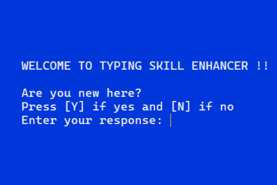
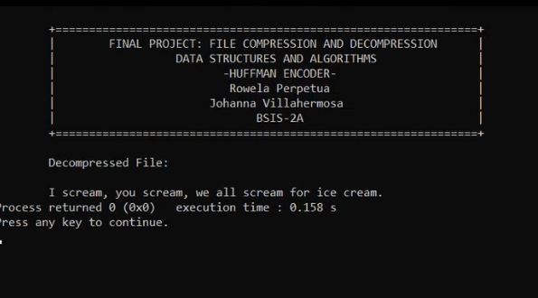
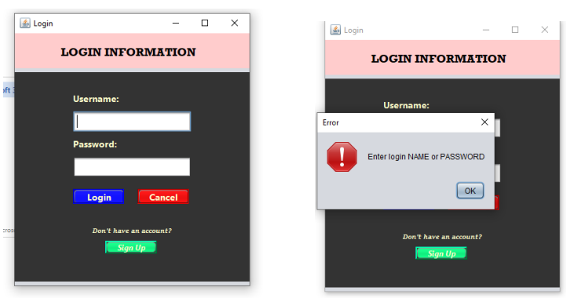

HOME
|
|
|
|
Hi! I'm Rowela Perpetua, a 3rd-year Information Systems student at the Technological University of the Philippines - Manila. When I started, I had no prior knowledge of programming, but after working on various projects since my 1st year, I've made significant progress. I particularly enjoy working with HTML, and I found our database classes especially rewarding. I have two sisters in the same field, and their influence played a big role in my decision to pursue this degree. If given the opportunity, I'm eager to continue learning and taking on new challenges in this field. Outside of academics, I spend my time with my four dogs—Hershey, Goya, Butter, and Cookie—who help me stay grounded during stressful moments.
|
ABOUT ME

|
Full Name: Rowela Gimeno Perpetua |
SKILLS
| Skills | Proficiency Level |
| C Programming Language | Intermediate |
| C++ Programming Language | Intermediate |
| Java Programming Language | Intermediate |
| HTML Programming Language | Beginner |
| CSS Programming Language | Beginner |
| Database (MySQL) | Beginner |
PROJECTS
| PROJECT | PROJECT DESCRIPTION |
|
Minesweeper Game
This project is a Minesweeper game made in c programming language. Minesweeper is a classic
puzzle video game where the objective is to clear a grid without detonating hidden mines. The player
clicks on tiles to reveal numbers that indicate how many adjacent tiles contain mines. The goal is to
use logic and deduction to flag all the mines without triggering any.
|
|
|  |
Typing Test
This project is a Typing Speed Test made in c programming language. Its primary purpose is to
test how fast and accurate you type. A typing test measures a user's typing speed and accuracy by
having them type a passage within a set time. The test often evaluates the number of words per
minute (WPM) typed correctly and helps users improve their typing skills by providing immediate
feedback on speed and errors.
|
|
RGBanks: ATM Bank Simulation
This project is an ATM Bank Simulation. It was made in c++ programming language and uses
object-oriented programming. It was created to mimic the behavior of banks like
register account, entering pincodes, cash deposit, cash withdrawal, and bank transfer.
|
|
|  |
Huffman Code: File Compression and Decompression
File Compression and Decompression: File compression and decompression refer to the process of
reducing the size of files (compression) to save space and transferring them more efficiently,
and then restoring them to their original form (decompression). Compression techniques can be
either lossless, where no data is lost, or lossy, where some data may be discarded to achieve
higher compression rates. This process is essential for optimizing storage and data transfer
over networks.
|
|

|
Database Management
This project was made with java and MySQL Workbench. User interface
was introduced and implemented in this project with the use of Java that
connects to an existing database, and vice versa. Also, Object-oriented
programming was utilized to achieve organized syntax. This project allows
you to login, sign up, update, and delete data in the database. The database,
given that it is interconnected with the main program, you could also modify, add or
even delete data directly from the table.
|